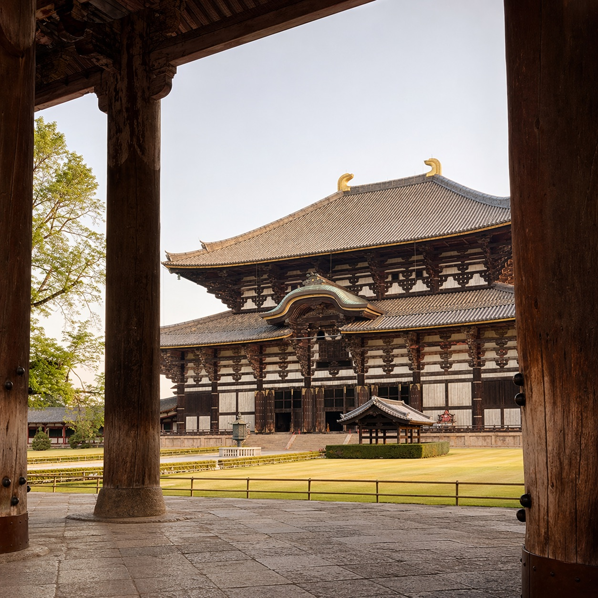

Naramachi
Naramachi
ならまちは、かつての元興寺(がんごうじ)の旧境内を中心に広がる、江戸から明治にかけての町家が残る歴史地区です。 碁盤目状に走る細い路地、格子戸の町家、軒先に吊るされた身代わり申── 大和の古い暮らしの気配が、今もそのまま息づいています。
派手な観光地ではありません。だからこそ、朝の静けさ、昼の光、夕方の町の表情、夜の提灯の灯り。 一日のなかでめまぐるしく変わる町の顔を、ゆっくり味わっていただけます。
老舗の和菓子店で季節の上生菓子をいただいたり、 古い町家を改装したカフェで一杯のコーヒーを楽しんだり。 予定を詰め込まないことが、この町を一番豊かに過ごす方法かもしれません。
世界遺産。国宝の極楽堂と、瓦に刻まれた千年の時間を静かに感じられます。
宿から徒歩15分ほど。朝、鹿たちが目覚める時間帯の散歩が特に気持ちよく。

大仏殿はもちろん、二月堂から見下ろす奈良の町の景色は圧巻です。
朱色の回廊と、苔むす石灯籠。朝いちばんの参拝がおすすめです。